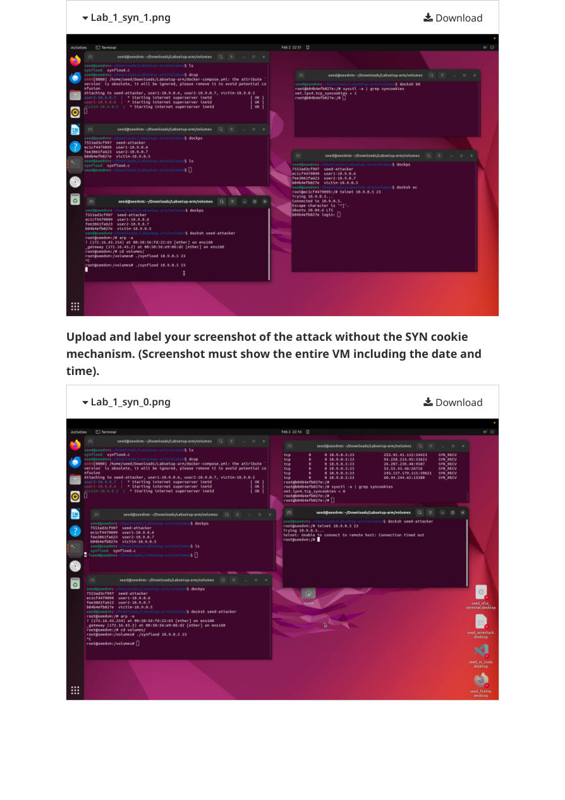
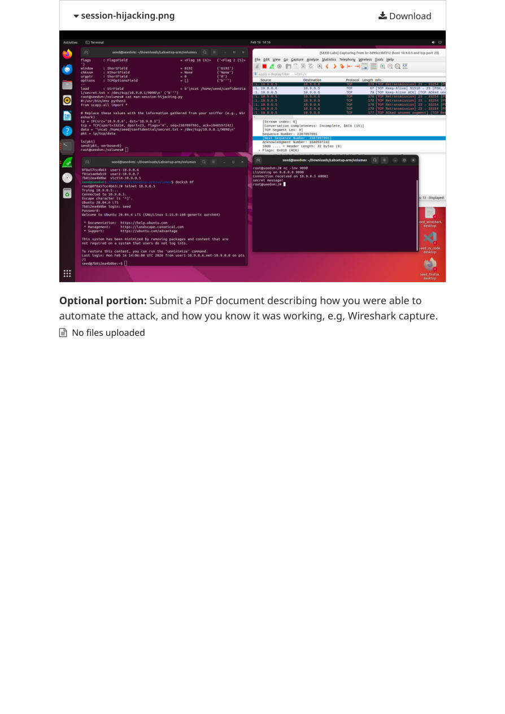
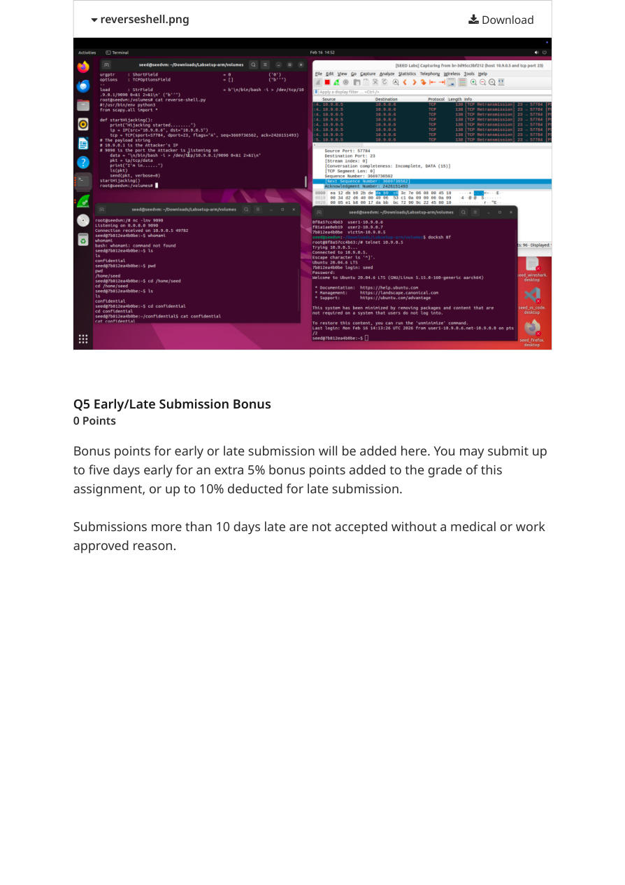

CASE STUDY / NETWORK SECURITY
TCP Protocol Security.
Investigating SYN flooding, TCP reset spoofing, session hijacking, and reverse-shell behavior in a controlled SEED Labs environment.
Python / ScapyCWiresharkDockerLinux
EDUCATIONAL LAB · AUTHORIZED ISOLATED ENVIRONMENT · 4 EXPERIMENTS
OVERVIEW
Understanding protocol weaknesses through evidence.
For this graduate-level lab, I examined how TCP connection state and unencrypted remote access can be exploited in a deliberately isolated environment. My graded submission includes source code, terminal screenshots, and Wireshark evidence. The assignment received 105/100 including bonus points.
01
SYN Flooding & SYN Cookies
Compared connection behavior during a SYN flood with SYN cookie protection enabled and disabled, highlighting backlog exhaustion and mitigation limits.

Defensive takeaway: Monitor SYN rates and half-open connections; deploy SYN cookies and layered DoS controls.
02
TCP Reset Spoofing
Explored how crafted TCP RST packets can terminate an established Telnet connection when accepted by the endpoint.

Defensive takeaway: Investigate unusual RST patterns and prefer authenticated encrypted protocols.
03
TCP Session Hijacking
Investigated packet injection into an unencrypted Telnet session using TCP sequence and acknowledgment information.

Defensive takeaway: Replace Telnet with SSH and segment sensitive management traffic.
04
Reverse Shell via Hijacking
Examined the impact of session compromise by demonstrating a reverse-shell scenario within the controlled lab.

Defensive takeaway: Monitor outbound connections and correlate network events with endpoint telemetry.
EVIDENCE & LIMITATIONS
Transparent documentation
These images are extracted from the original graded submission, not newly reproduced experiments. The session-hijacking task lost five points because the submission omitted a required Wireshark frame showing injected code with SEQ/ACK values. Raw PCAP files are not included. Some C starter code originated with SEED Labs and requires upstream attribution before public source publication.
Reference: SEED Labs TCP Attacks lab guide ↗